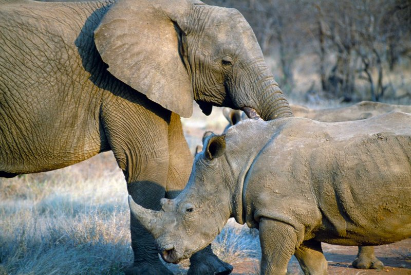
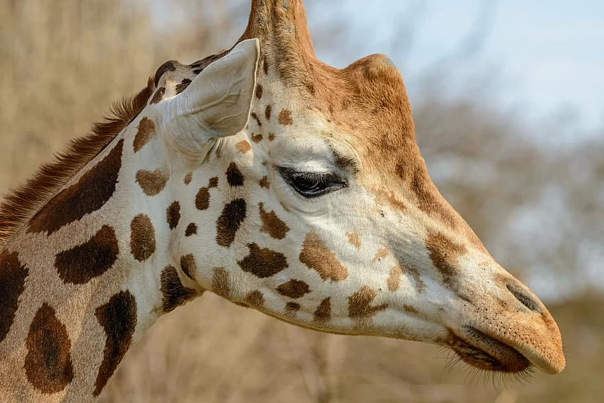

Tästä pääse takaisin alkuun
esimerkiksi Afrikan savanneilla on paljon isokokoisia eläimiä
On vaikkapa sarvikuonoja ja norsuja.

on myös monia muita tunnettuja eläimiä, kuten seepra tai vaikkapa kirahvi
Kirahvi on maailman pisin eläin

kuvassa on kirahvi, lähde
wikidata
jotta kyseiset eläimet eivät katoa kokonaan seuraavien vuosikymmenten aikana on ihmisillä paljon parannettavaa